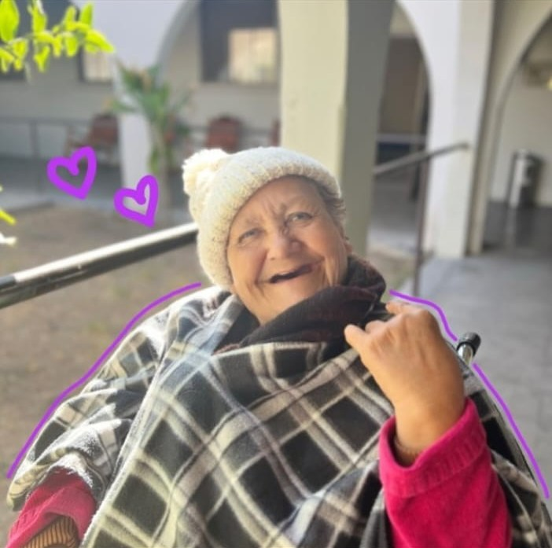
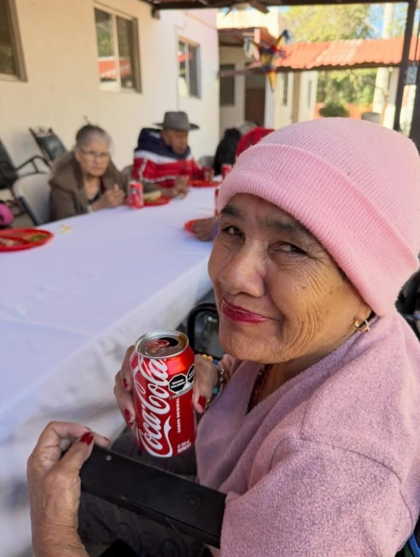
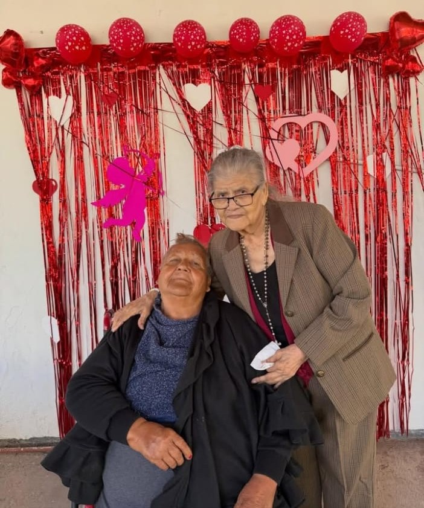
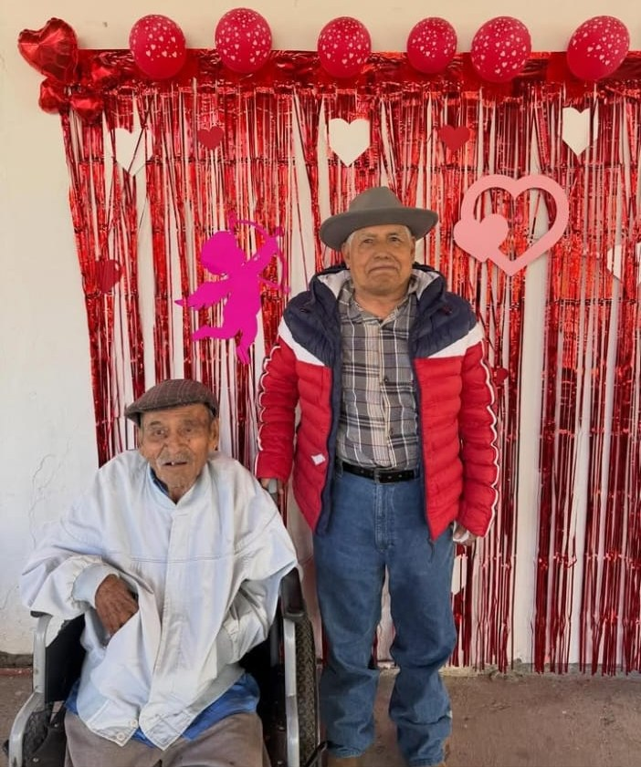

Una vejez digna para quienes más lo necesitan
Somos una casa hogar sin fines de lucro que brinda asistencia integral a personas adultas mayores de escasos recursos. Tu donativo se convierte en alimento, cuidados y compañía.
Nuestra historia
La institución nació en 1936, brindando atención a personas recién liberadas de prisión y a quienes no contaban con un hogar. Con el paso de los años, la Casa Hogar ha sido guiada por diferentes patronatos.
Actualmente está dirigida por el presidente Alejo Bay, su esposa María Luisa Jiménez y un equipo de 14 parejas más, quienes trabajan para cubrir las necesidades de la institución con el valioso apoyo de empresarios, escuelas y la comunidad en general.

Misión
Dar asistencia integral a personas de edad avanzada y de escasos recursos, así como promover entre nuestra comunidad el más digno reconocimiento a la vejez.
Principales actividades
Colecta anual
Cada año invitamos a toda la comunidad de Hermosillo a sumarse a nuestra colecta para sostener la operación de la casa hogar.
Programa Adopte un Abuelo
Personas, familias y empresas pueden apadrinar a un abuelo y acompañarlo con su apoyo. Contáctanos para conocer cómo participar.
Programas de redondeo
Participamos en programas de redondeo en comercios: cuando redondeas tu compra, esos centavos también cuidan a nuestros abuelos.
Cómo puedes ayudar
Donativo en línea
Dona de forma segura con tarjeta de crédito o débito. El pago se procesa a través de Stripe; nosotros nunca vemos ni guardamos los datos de tu tarjeta.
DonarDonativo en especie
Alimentos, artículos de higiene, pañales para adulto, ropa de cama y medicamentos ayudan a cubrir las necesidades diarias. Escríbenos o llámanos para saber qué necesitamos hoy.
Tu tiempo y tu empresa
Escuelas, empresas y familias pueden organizar visitas, colectas o patrocinios. Contáctanos y con gusto te orientamos.
Nuestra casa





Cada donativo cuenta
Con tu apoyo seguimos cuidando a nuestros abuelos como lo hemos hecho desde 1936. Puedes hacer un donativo único de la cantidad que tú elijas.
Quiero donarRecibos deducibles
Somos donataria autorizada por el SAT, por lo que tu donativo puede ser deducible de impuestos. Para solicitar tu recibo (CFDI), envía al correo asilojuanpablohermosillo@gmail.com el comprobante de tu donativo junto con tu RFC, nombre o razón social, régimen fiscal, código postal y uso de CFDI.
- Razón social
- Asilo de Ancianos Aida S. de Rodríguez I.A.P.
- RFC
- AAA940610LS3
- Régimen fiscal
- 603 – Personas Morales con Fines no Lucrativos
- Ubicación
- Hermosillo, Sonora, México
Contacto
- 📍 Blvd. Luis Encinas esq. B. Reyes S/N, Col. San Benito, C.P. 83190, Hermosillo, Sonora
- 📞 662 212 0105
- ✉️ asilojuanpablohermosillo@gmail.com
- ✉️ asilodeancianosaidasrodriguez@hotmail.com
- 📘 Facebook: @Asilojuanpablohermosillo
- 📷 Instagram: @Asilojuanpablohermosillo
- Escríbenos por WhatsApp